浅谈APP漏洞挖掘之逻辑漏洞
0x00 简介
本文主要介绍APP漏洞挖掘中逻辑漏洞，包括任意用户密码重置，支付漏洞，任意用户未授权登录。
0x01 任意用户密码重置正文
首先，我们来看看任意用户密码重置。
方法一:密码找回的凭证太弱，为4位或6位纯数字，并且时效过长，导致可爆破从而重置用户密码。
这里我们来看一个实例，目前厂商已经修复。
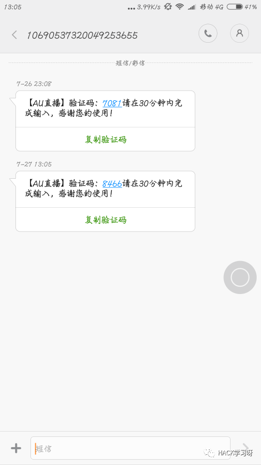
验证码为4位纯数字，我们使用burpsuite爆破。
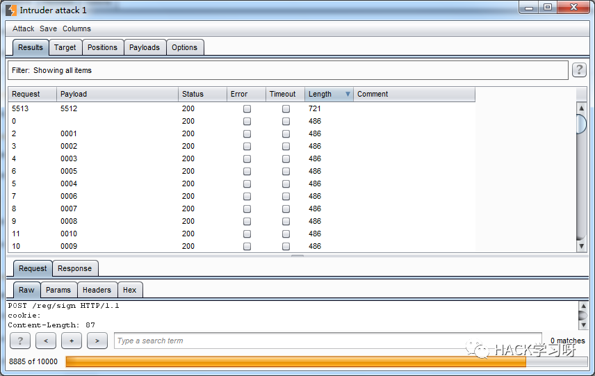
可以看到成功爆破出了。4位数字0~9有9999种可能，我们线程设置10，五分钟之内就可以爆破出凭证。
方法二:验证码传输在数据包中。
这里共有两种可能，一种在返回包，一种在获取验证码的数据包中。我们来看两个实例。
第一个:验证码在返回包中
在输入好手机号点击下一步时，我们抓包，截取返回包。
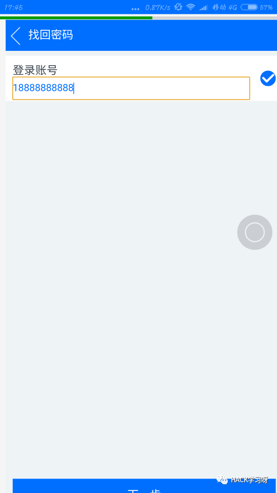
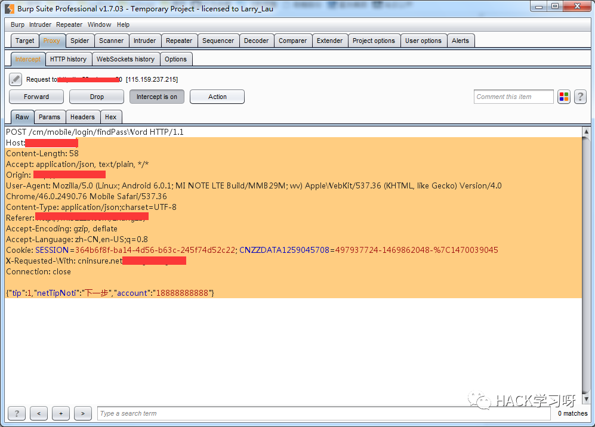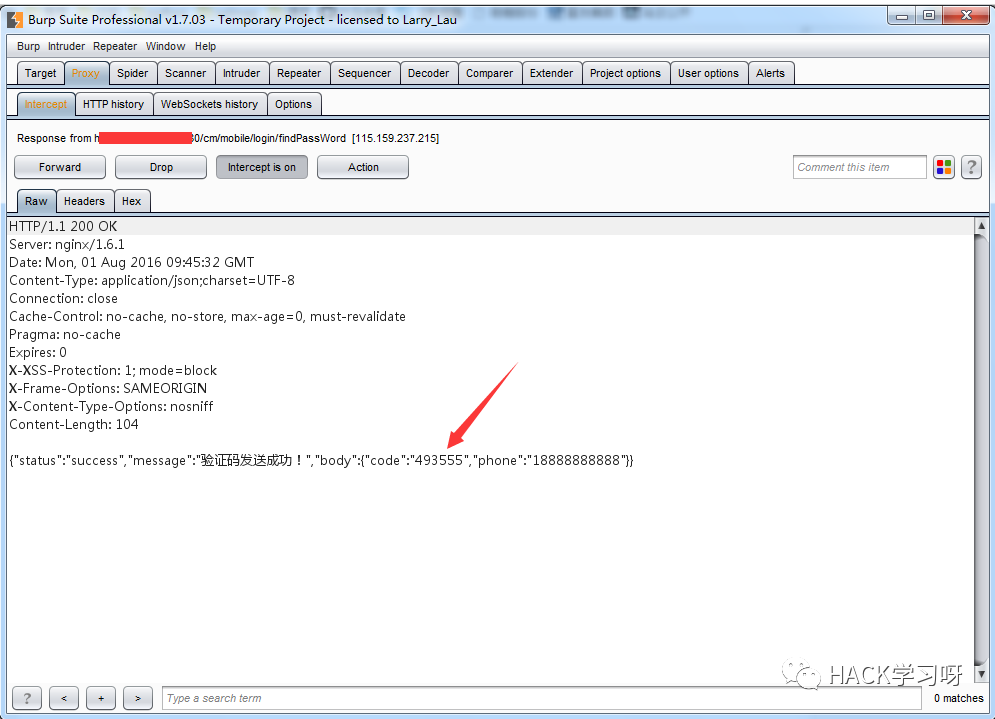
第二个:验证码在获取验证码的数据包中。
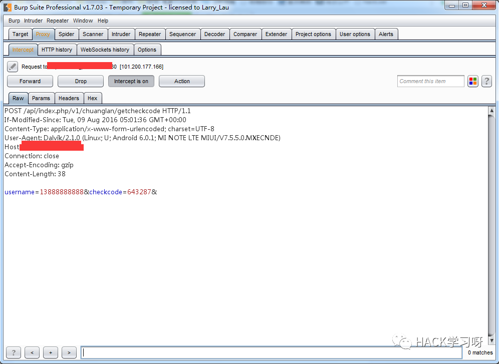
Checkcode后面的六位数字就为验证码了，这种情况我只见过一次。
方法三:输入好凭证后，重置密码时替换手机号。
看个实例:
这款APP重置密码分为两步，第一步是输入手机号获取验证码并填入，正确后即跳转到下一步，然后就是输入新密码。我们在输入新密码后抓包，替换手机号放包即可重置。
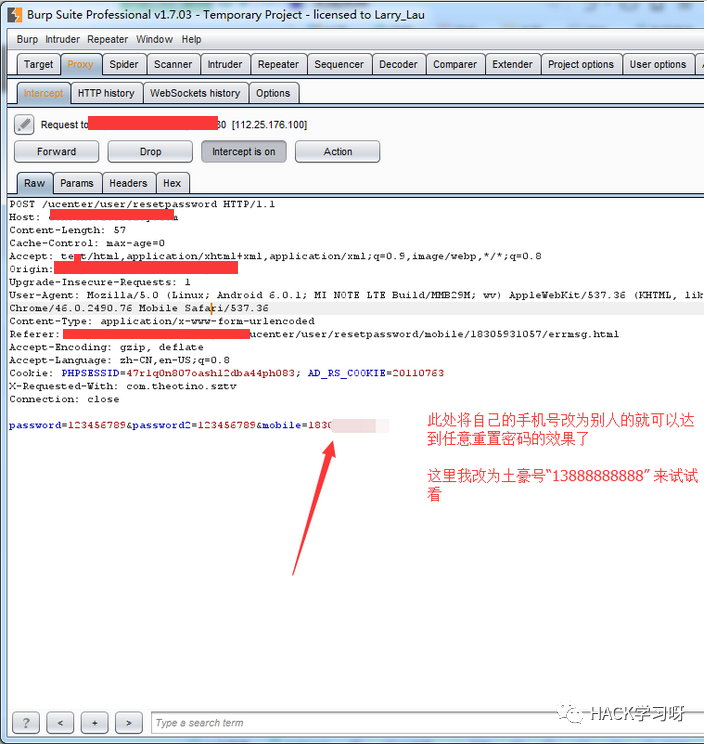
方法四:修改返回包内容，把错误的改为正确的。
具体来看一个实例:
我在输入好手机号获取验证码后，随便输入一个数字。然后抓包
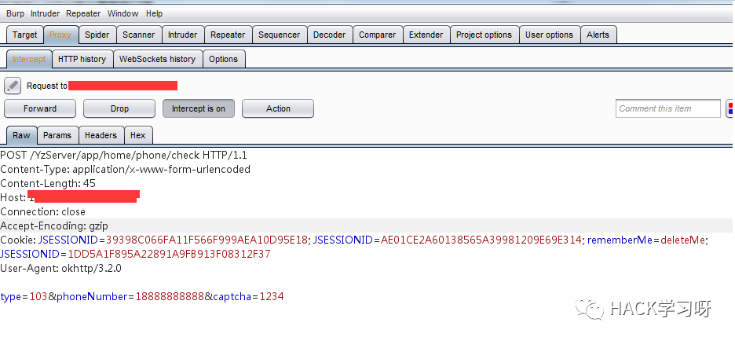
截取返回包 修改1为0。
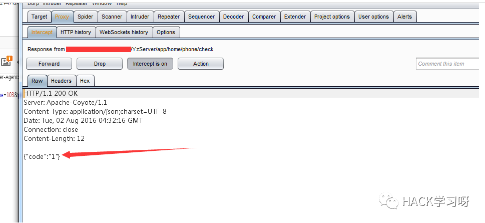
方法五:获取验证码时手机号为明文，修改为自己的从而达到欺骗验证。
这种方法由于我在挖掘APP漏洞中暂时没有遇到，所以无法找到APP实例，但是有一个WEB实例，这里也贴上来，思路方法都是一样的。WEB实例作者:离心。

改为自己的，即可收到验证码。

x02 支付漏洞正文
方法一:修改金额
还是来看一个实例，确认支付时候抓包，截取返回包。
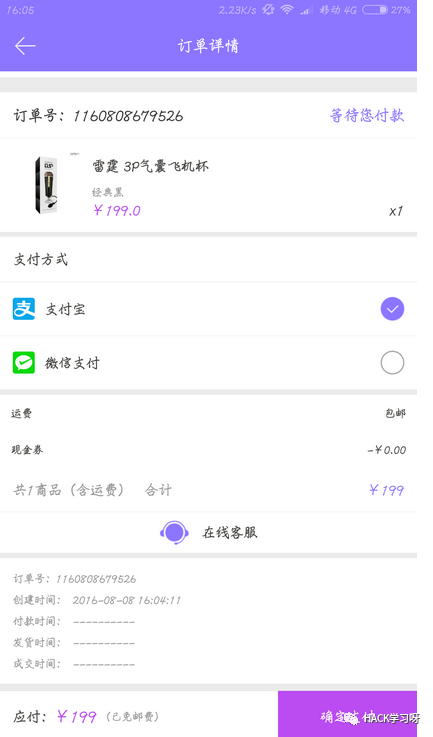
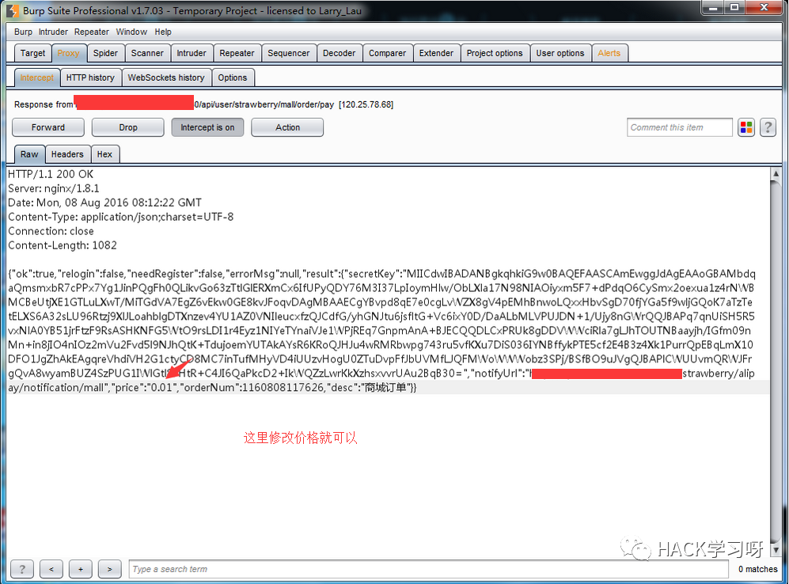
嘿嘿，放包即可成功一毛钱买飞机杯^_^
方法二:修改金额为负数。
此方法我目前没有遇到过，所以不配实例，操作起来也是一样的。
0x03 任意用户未授权登录
方法一:登录时抓包，修改uid
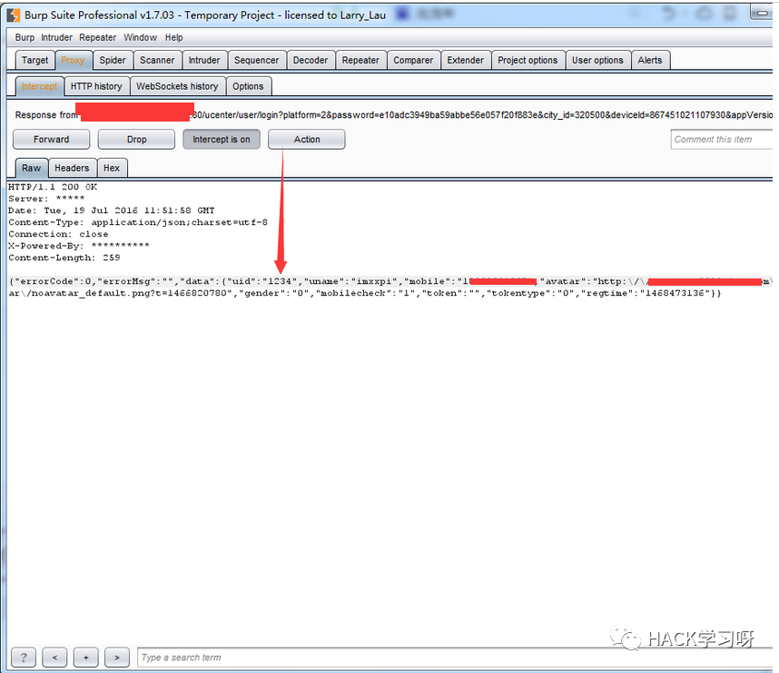
0x04 总结
以上漏洞修复方法:找回密码凭证够复杂并且不可猜测，同时注意以上逻辑问题，不可存在越权，或者重要的凭证在不该出现的地方出现。

虽然这是一篇16年的文章，但是我觉得对当前很多人还是有很大的帮助
可以提升下自己的思路
文章来源：互联网
原作者：离心
如有侵权，请联系删除